Tomcat 学习实录
背景
Tomcat是一个业界非常优秀的web容器框架，学习里面核心的实现机制，扩展自己的知识面还是很有必要的。每个做Java的，应该没有人没接触过Tomcat。
学习Tomcat，有一个核心的命题，看源码。既然要看源码，自然少不了调试，如何调试Tomcat，这里在学习极客时间相关课程中提到过一个方式，可以很好的在IDE中进行调试，那就是通过嵌入式手工创建Tomcat来进行，具体请参考如下链接教程说明以及对应的代码示例：
create-a-java-web-application-using-embedded-tomcat
github/devcenter-embedded-tomcat
学习实录
极客时间-深入拆解Tomcat
注： 这个课程中使用的是Tomcat 9.x的版本，其它版本的源码可能略有不同
整体的架构示意图如下：
从图上你可以看到，最顶层是 Server，这里的 Server 指的就是一个 Tomcat 实例。一个 Server 中有一个或者多个 Service，一个 Service 中有多个连接器和一个容器。连接器与容器之间通过标准的 ServletRequest 和 ServletResponse 通信。
连接器（connector）
EndPoint 负责提供字节流给 Processor，Processor 负责提供 Tomcat Request 对象给 Adapter，Adapter 负责提供 ServletRequest 对象给容器。
由于 I/O 模型和应用层协议可以自由组合，比如 NIO + HTTP 或者 NIO2 + AJP。Tomcat 的设计者将网络通信和应用层协议解析放在一起考虑，设计了一个叫 ProtocolHandler 的接口来封装这两种变化点。
整体工作示意图，如下：
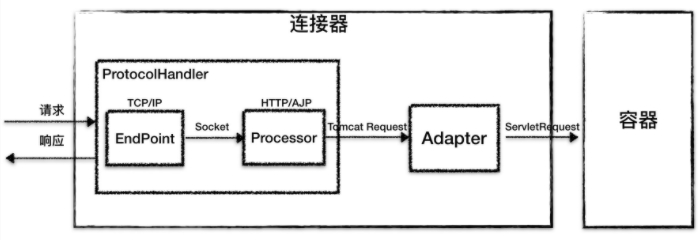
ProtocolHandler 组件
连接器用 ProtocolHandler 来处理网络连接和应用层协议，包含了 2 个重要部件：EndPoint 和 Processor
EndPoint
EndPoint 是通信端点，即通信监听的接口，是具体的 Socket 接收和发送处理器，是对传输层的抽象，因此 EndPoint 是用来实现 TCP/IP 协议的。
Processor
如果说 EndPoint 是用来实现 TCP/IP 协议的，那么 Processor 用来实现 HTTP 协议，Processor 接收来自 EndPoint 的 Socket，读取字节流解析成 Tomcat Request 和 Response 对象，并通过 Adapter 将其提交到容器处理，Processor 是对应用层协议的抽象。
Adapter 组件
ProtocolHandler 接口负责解析请求并生成 Tomcat Request 类。但是这个 Request 对象不是标准的 ServletRequest，也就意味着，不能用 Tomcat Request 作为参数来调用容器。Tomcat 设计者的解决方案是引入 CoyoteAdapter，这是适配器模式的经典运用，连接器调用 CoyoteAdapter 的 Sevice 方法，传入的是 Tomcat Request 对象，CoyoteAdapter 负责将 Tomcat Request 转成 ServletRequest，再调用容器的 Service 方法。
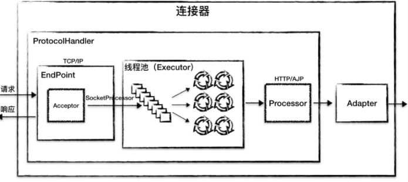
容器（container）
容器的整体架构如下：
从图可以明显的看出相对应的层次结构
层次结构
Tomcat 设计了 4 种容器，分别是 Engine、Host、Context 和 Wrapper。这 4 种容器不是平行关系，而是父子关系。
多层容器设计的考虑：Tomcat 通过一种分层的架构，使得 Servlet 容器具有很好的灵活性。
Context 表示一个 Web 应用程序；Wrapper 表示一个 Servlet，一个 Web 应用程序中可能会有多个 Servlet；Host 代表的是一个虚拟主机，或者说一个站点，可以给 Tomcat 配置多个虚拟主机地址，而一个虚拟主机下可以部署多个 Web 应用程序；Engine 表示引擎，用来管理多个虚拟站点，一个 Service 最多只能有一个 Engine。
Tomcat 就是用组合模式来管理这些容器的。具体实现方法是，所有容器组件都实现了 Container 接口，因此组合模式可以使得用户对单容器对象和组合容器对象的使用具有一致性。这里单容器对象指的是最底层的 Wrapper，组合容器对象指的是上面的 Context、Host 或者 Engine。
请求定位 Servlet 的过程
Tomcat 是用 Mapper 组件来完成确定请求是由哪个 Wrapper 容器里的 Servlet 来处理的
工作原理是 ：Mapper 组件里保存了 Web 应用的配置信息，其实就是容器组件与访问路径的映射关系，比如 Host 容器里配置的域名、Context 容器里的 Web 应用路径，以及 Wrapper 容器里 Servlet 映射的路径，你可以想象这些配置信息就是一个 多层次的 Map。
工作示例
注： 在课程中说到了一个具体的示例，还是说的比较清楚。
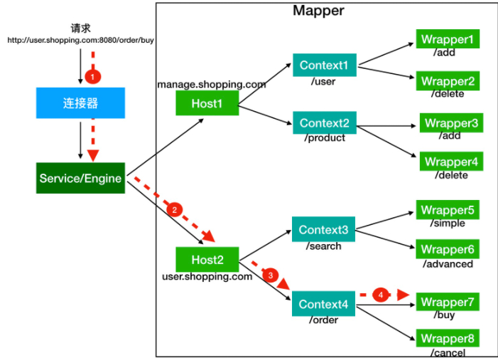
假如有用户访问一个 URL，比如图中的http://user.shopping.com:8080/order/buy，Tomcat 如何将这个 URL 定位到一个 Servlet 呢？
- 首先，根据协议和端口号选定 Service 和 Engine。
- 然后，根据域名选定 Host。
- 之后，根据 URL 路径找到 Context 组件。
- 最后，根据 URL 路径找到 Wrapper（Servlet）。
那么这个调用过程是使用 Pipeline-Valve 管道来实现的。而这个Valve是通过责任链设计模式来实现的，Valve就类比于一个Filter中的一环，而Pipeline就是将各个Valve串起来的类。
Valve关键代码：
1 | public interface Valve { |
Pipline关键代码：
1 | public interface Pipeline extends Contained { |
Pipeline 中有 addValve 方法。Pipeline 中维护了 Valve 链表，Valve 可以插入到 Pipeline 中，对请求做某些处理。我们还发现 Pipeline 中没有 invoke 方法，因为整个调用链的触发是 Valve 来完成的，Valve 完成自己的处理后，调用 getNext.invoke() 来触发下一个 Valve 调用。
注： 由上面看来就是一种完整的责任链设计模式的实现
至此，看清楚了每一个容器都有一个 Pipeline 对象，只要触发这个 Pipeline 的第一个 Valve，这个容器里 Pipeline 中的 Valve 就都会被调用到。但是，不同容器的 Pipeline 是怎么链式触发的呢，比如 Engine 中 Pipeline 需要调用下层容器 Host 中的 Pipeline。
这是因为 Pipeline 中还有个 getBasic 方法。这个 BasicValve 处于 Valve 链表的末端，它是 Pipeline 中必不可少的一个 Valve，负责调用下层容器的 Pipeline 里的第一个 Valve。如下图所示：
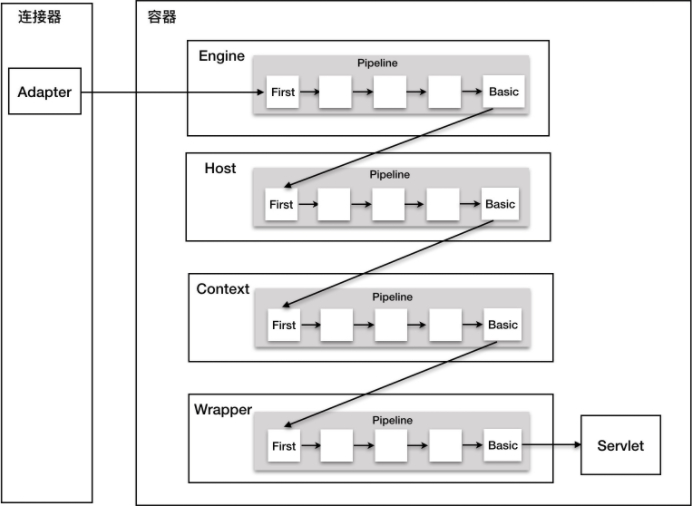
还有一个问题：Valve 和 Filter 有什么区别吗？
- Valve 是 Tomcat 的私有机制，与 Tomcat 的基础架构 /API 是紧耦合的。Servlet API 是公有的标准，所有的 Web 容器包括 Jetty 都支持 Filter 机制。
- Valve 工作在 Web 容器级别，拦截所有应用的请求；而 Servlet Filter 工作在应用级别，只能拦截某个 Web 应用的所有请求。如果想做整个 Web 容器的拦截器，必须通过 Valve 来实现。
生命周期
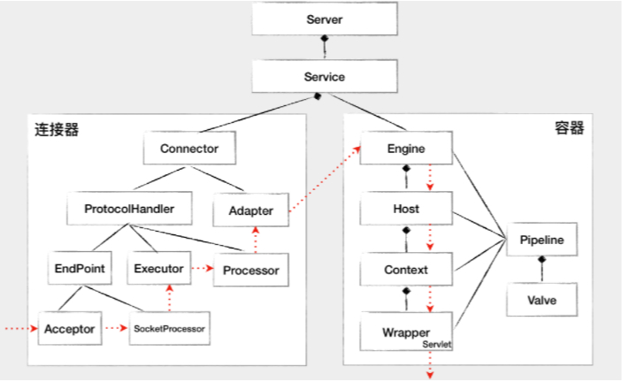
上面这张图描述了组件之间的静态关系，如果想让一个系统能够对外提供服务，我们需要创建、组装并启动这些组件；在服务停止的时候，我们还需要释放资源，销毁这些组件，因此这是一个动态的过程。也就是说，Tomcat 需要动态地管理这些组件的生命周期。
我们把不变点抽象出来成为一个接口，这个接口跟生命周期有关，叫作 LifeCycle。LifeCycle 接口里应该定义这么几个方法：init()、start()、stop() 和 destroy()，每个具体的组件去实现这些方法。
在父组件的 init() 方法里需要创建子组件并调用子组件的 init() 方法。同样，在父组件的 start() 方法里也需要调用子组件的 start() 方法，因此调用者可以无差别的调用各组件的 init() 方法和 start() 方法，这就是 组合模式的使用，并且只要调用最顶层组件，也就是 Server 组件的 init() 和 start() 方法，整个 Tomcat 就被启动起来了。
LifeCycle接口定义：
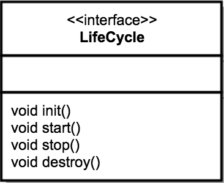
LifeCycle 事件
果将来需要增加新的逻辑，直接修改 start() 方法？这样会违反开闭原则，那如何解决这个问题呢？开闭原则说的是为了扩展系统的功能，你不能直接修改系统中已有的类，但是你可以定义新的类。
组件的 init() 和 start() 调用是由它的父组件的状态变化触发的，上层组件的初始化会触发子组件的初始化，上层组件的启动会触发子组件的启动，因此我们把组件的生命周期定义成一个个状态，把状态的转变看作是一个事件。而事件是有监听器的，在监听器里可以实现一些逻辑，并且监听器也可以方便的添加和删除，这就是典型的观察者模式。
具体来说就是在 LifeCycle 接口里加入两个方法：添加监听器和删除监听器。除此之外，我们还需要定义一个 Enum 来表示组件有哪些状态，以及处在什么状态会触发什么样的事件。因此 LifeCycle 接口和 LifeCycleState 就定义成了下面这样。
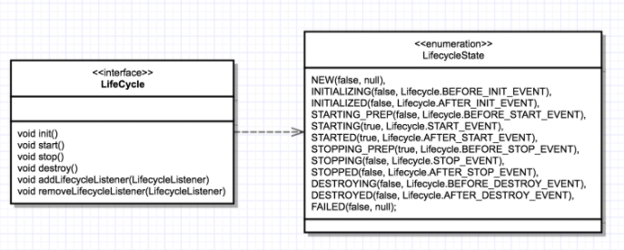
重用性：LifeCycleBase 抽象基类
回到 LifeCycle 接口，Tomcat 定义一个基类 LifeCycleBase 来实现 LifeCycle 接口，把一些公共的逻辑放到基类中去，比如生命状态的转变与维护、生命事件的触发以及监听器的添加和删除等，而子类就负责实现自己的初始化、启动和停止等方法。为了避免跟基类中的方法同名，我们把具体子类的实现方法改个名字，在后面加上 Internal，叫 initInternal()、startInternal() 等。我们再来看引入了基类 LifeCycleBase 后的类图：
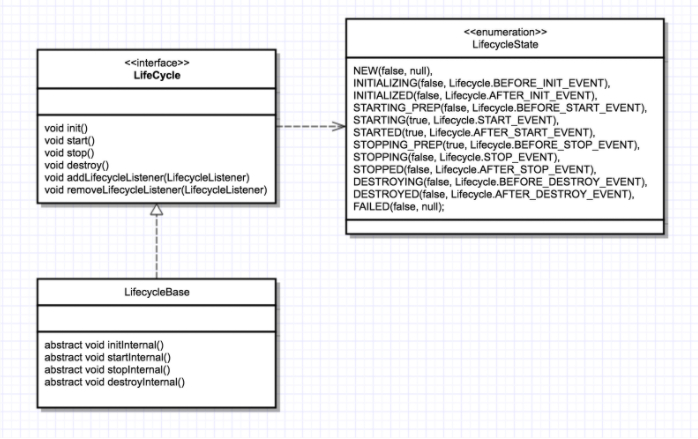
其中LifeCycleBase 的 init() 方法实现，核心代码如下：
1 |
|
Tomcat启动剖析
我们可以通过 Tomcat 的 /bin 目录下的脚本 startup.sh 来启动 Tomcat，那你是否知道我们执行了这个脚本后发生了什么呢？来看看下面一张图：
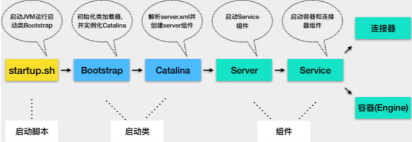
- Tomcat 本质上是一个 Java 程序，因此 startup.sh 脚本会启动一个 JVM 来运行 Tomcat 的启动类 Bootstrap。
- Bootstrap 的主要任务是初始化 Tomcat 的类加载器（自己实现的类加载器，在官方发行版的Tomcat/bin目录下），并且创建 Catalina。
- Catalina 是一个启动类，它通过解析 server.xml、创建相应的组件，并调用 Server 的 start 方法。
- Server 组件的职责就是管理 Service 组件，它会负责调用 Service 的 start 方法。
- Service 组件的职责就是管理连接器和顶层容器 Engine，因此它会调用连接器和 Engine 的 start 方法。
Catalina
Catalina 的主要任务就是创建 Server，它不是直接 new 一个 Server 实例就完事了，而是需要解析 server.xml，把在 server.xml 里配置的各种组件一一创建出来，接着调用 Server 组件的 init 方法和 start 方法，这样整个 Tomcat 就启动起来了。作为“管理者”，Catalina 还需要处理各种“异常”情况，比如当我们通过“Ctrl + C”关闭 Tomcat 时，Tomcat 将如何优雅的停止并且清理资源呢？因此 Catalina 在 JVM 中注册一个“关闭钩子”。
1 | public void start() { |
从这段代码中你可以看到，Tomcat 的“关闭钩子”实际上就执行了 Server 的 stop 方法，Server 的 stop 方法会释放和清理所有的资源。
Server 组件
Server 组件的具体实现类是 StandardServer。Server 继承了 LifeCycleBase，它的生命周期被统一管理，并且它的子组件是 Service，因此它还需要管理 Service 的生命周期，也就是说在启动时调用 Service 组件的启动方法，在停止时调用它们的停止方法。Server 在内部维护了若干 Service 组件，它是以数组来保存的，那 Server 是如何添加一个 Service 到数组中的呢？
1 |
|
上面 Caralina 的启动方法的最后一行代码就是调用了 Server 的 await 方法。在 await 方法里会创建一个 Socket 监听 8005 端口，并在一个死循环里接收 Socket 上的连接请求，如果有新的连接到来就建立连接，然后从 Socket 中读取数据；如果读到的数据是停止命令“SHUTDOWN”，就退出循环，进入 stop 流程。
Service 组件
Service 组件的具体实现类是 StandardService，核心代码实现如下：
1 | public class StandardService extends LifecycleBase implements Service { |
为什么还有一个 MapperListener？这是因为 Tomcat 支持热部署，当 Web 应用的部署发生变化时，Mapper 中的映射信息也要跟着变化，MapperListener 就是一个监听器，它监听容器的变化，并把信息更新到 Mapper 中，这是典型的观察者模式。
作为“管理”角色的组件，最重要的是维护其他组件的生命周期。此外在启动各种组件时，要注意它们的依赖关系，也就是说，要注意启动的顺序。 Service 启动方法如下：
1 | protected void startInternal() throws LifecycleException { |
Engine 组件
Engine 本质是一个容器，因此它继承了 ContainerBase 基类，并且实现了 Engine 接口。
1 | public class StandardEngine extends ContainerBase implements Engine { |
Engine 的子容器是 Host，所以它持有了一个 Host 容器的数组，这些功能都被抽象到了 ContainerBase 中，ContainerBase 中有这样一个数据结构：
1 | protected final HashMap<String, Container> children = new HashMap<>(); |
ContainerBase 用 HashMap 保存了它的子容器，并且 ContainerBase 还实现了子容器的“增删改查”，甚至连子组件的启动和停止都提供了默认实现，比如 ContainerBase 会用专门的线程池来启动子容器。如下面代码片段所示：
1 | for (int i = 0; i < children.length; i++) { |
Engine 容器的ValveBase定义如下：
1 | final class StandardEngineValve extends ValveBase { |
这个基础阀实现非常简单，就是把请求转发到 Host 容器。你可能好奇，从代码中可以看到，处理请求的 Host 容器对象是从请求中拿到的，请求对象中怎么会有 Host 容器呢？这是因为请求到达 Engine 容器中之前，Mapper 组件已经对请求进行了路由处理，Mapper 组件通过请求的 URL 定位了相应的容器，并且把容器对象保存到了请求对象中。
NioEndpoint 组件
Tomcat架构解析-刘光瑞
这本书基于8.5.x介绍的，里面包含很多高级特性，值得阅读
tomcat介绍
Tomcat运行目录介绍：
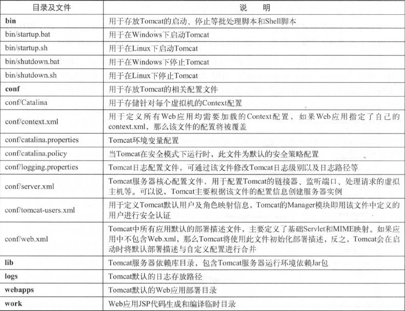
8.5之后的一些新特性
Tomcat 整体架构
注： 这个章节介绍了，Tomcat整体的架构设计，分别列出了几个核心组件以及相关核心设计
Server
Connector & Container
Container设计
LifeCycle
Pipeline & Valve
在增强组件的灵活性和可扩展方面，责任链模式 是一种比较好的选择。在Tomcat中每个Container组件通过执行一个责任链来完成具体的请求处理。
Tomcat定义了Pipeline（管道）和Valve（阈）两个接口。前者用于构造责任链，后者代表责任链上的每个处理器。
Connector设计
Executor
Bootstrap & Catalina
Tomcat启动
Tomcat应用启动该过程非常标准化，统一按照生命周期管理接口Lifecycle的定义进行启动，首先通过调用init方法进行组件的逐级初始化，然后在调用start方法进行启动。
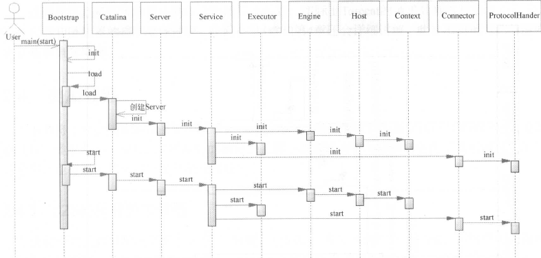